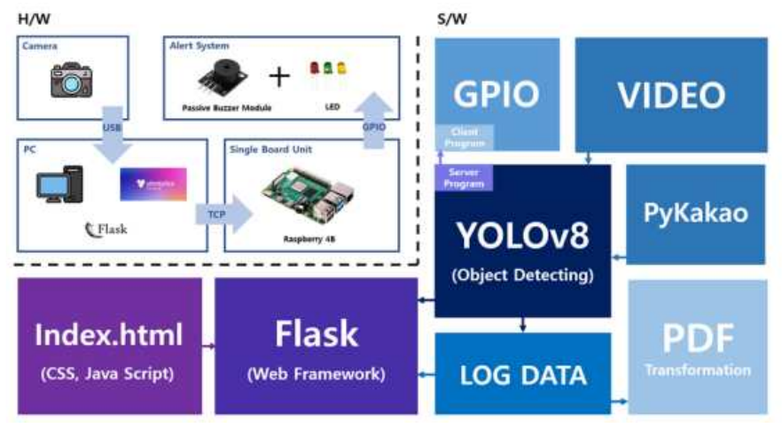
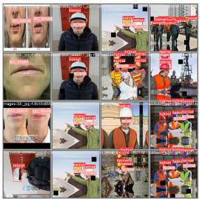
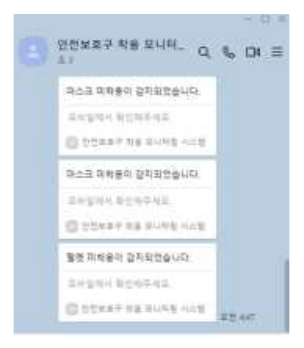

2024 스마트 해상물류 ICT 멘토링(과제 24_HP105), 팀 4명. 카메라 기반 착용 인식, 경고 로직, UI, 정확도 개선을 담당했습니다.
처음엔 프레임 안의 사람 수와 헬멧 수를 비교해 미착용을 판정했는데, 사람이 겹치거나 가려지면 바로 오판이 났습니다. 머리와 입술을 직접 검출해 helmet / no_helmet / mask / no_mask 4클래스로 판정하는 방식으로 바꿨습니다.
근거리 사진 위주로 학습했을 때 원거리 탐지가 실패해서 수천 장을 크롤링하고 수작업으로 라벨링해 보강했습니다. Roboflow 무료 계정은 3명까지라 번호 규칙(helmet 0 / no helmet 1 / no mask 2)을 정해 두고 파이썬으로 재매핑해 팀 작업을 합쳤습니다.
YOLOv8 검출 → Flask 웹(SQLite 로그, Matplotlib 시간대별 그래프, 임계값 이상은 빨간색) → PyKakao 카카오톡 알림과 ReportLab PDF 리포트 → 라즈베리파이 4B가 TCP 소켓으로 LED·부저(헬멧 미착용 빨강+부저, 마스크 노랑)를 울리는 흐름입니다. 포트포워딩과 무료 도메인으로 외부 접속 데모까지 했습니다.



동아리 동료 4명이 Discord·Google Meet·HackMD·Notion으로 주 2회 회의하며 팀장 / 프론트 / 백엔드 / 모델·시스템 통합으로 역할을 나눴습니다. 보고서 기준 전체 mAP50 0.791은 클래스별 값과 맞지 않아 포트폴리오에서는 쓰지 않았습니다.